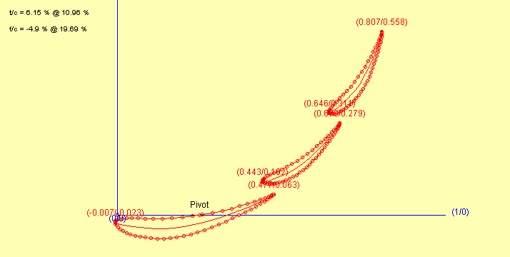
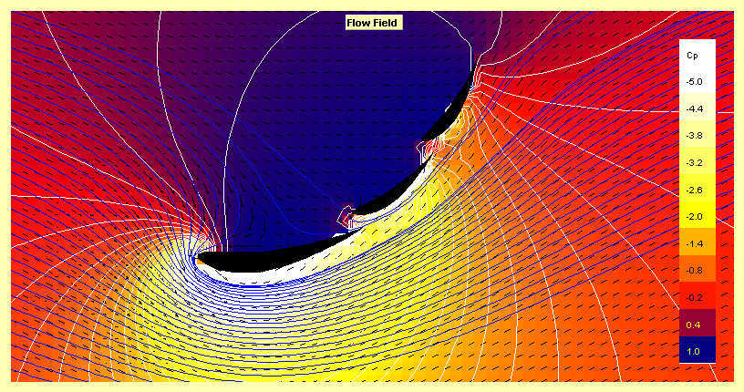
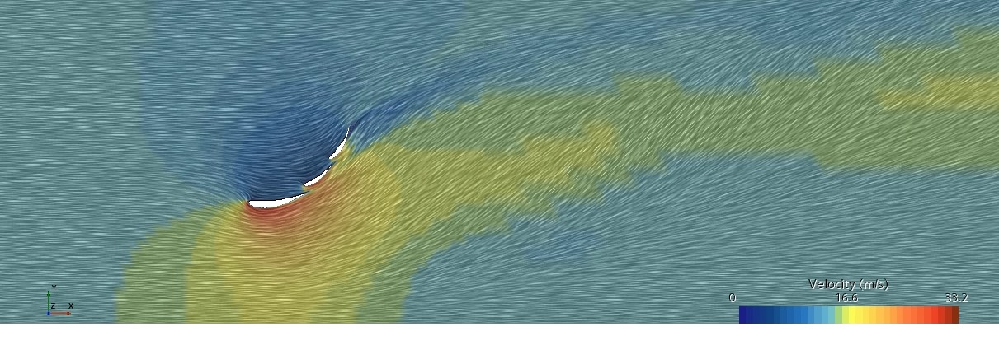
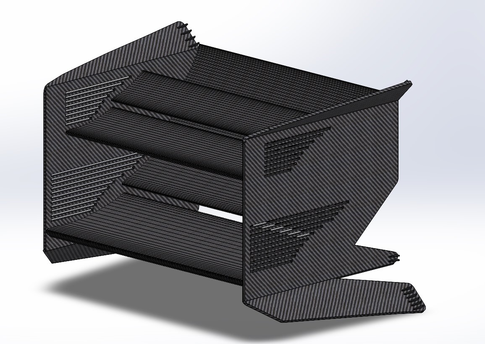
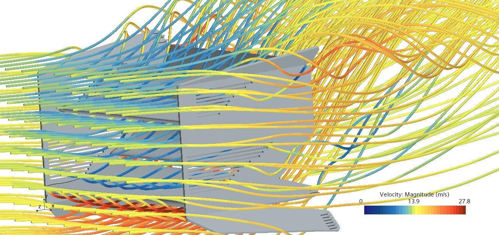
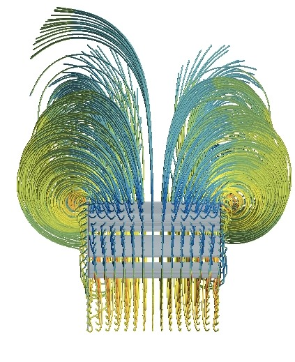
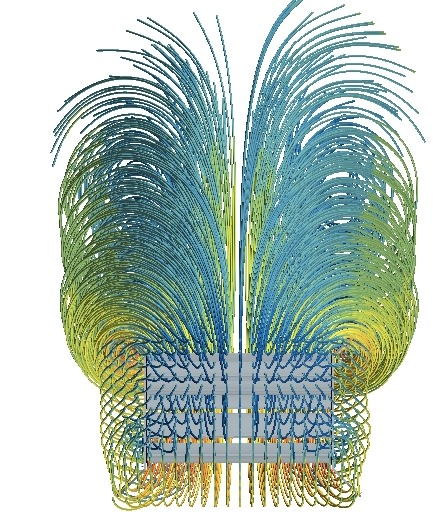

Queen Mary Formula Student - Rear Wing Redesign
May 2023 - Present
After returning from the IMeche Formula Student competition in late July 2023, the aerodynamics team and senior management decided that the front and rear wings would be new additions for the next iteration of the car.
My previous rear wing design was too low drag optimised producing only 127N of downforce. So I set about creating a new design starting from scratch that would still meet the simple to manufacture requirement.
I had found JavaFoil to be highly inaccurate for the Eppler - 423 aerofoil when iterating my previous design based on subsequent CFD simulations. This time round I decided to base my first iteration off the theory for rear wing design. Such as utilising the Venturi effect between elements, where the trailing edge of the front most element and the leading edge of the rear most element form a convergent section compressing the air. Resulting in a low pressure region which draws in air from the high pressure region above the aerofoils re-energising the airflow and delaying the onset of flow separation and thus stall. Meaning the trailing elements can form an overall aerofoil shape with a greater angle of attack as opposed to having a single large element. This allows for greater downforce production with less pressure drag.
Due to JavaFoils inaccuracy I did not spend much time iterating the design using it and instead switched over to 2D CFD
Once I was happy with the design I utilised SolidWorks to produce a CAD model with a set of dimensions optimised for the rear wings location on the car and as big as the regulations would permit.

The endplates were next to be optimised with a balance of two key factors. Being lightweight with cutouts but also reducing the pressure drag by stopping air from leaking from the upper surfaces of the aerofoils to the lower surfaces.
This optinisation process is still in progress.
I aslo designed a no design constraints version of the rear wing. This mainly breaks the simple to manufacture requirement (composites team look away) but also some of the IMeche formula student regulations for aerodynamic devices.
The purpose of this design was to test some unused aerodynamic features such as vortex generators.
Unfortunately most of the features failed to work, including the vortex generators as shown in the images below. However, a successful test none the less and some learnings were made in CAD modelling were made in the process.
Vortices produced by the simple to manufacture design
Vortices produced by the extreme design. As visually indicated, no significant difference in noticeable.